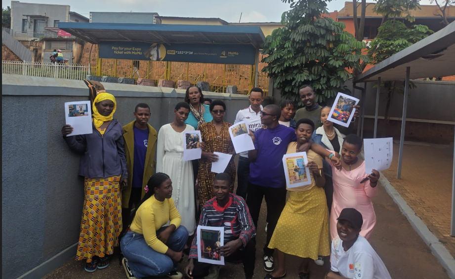
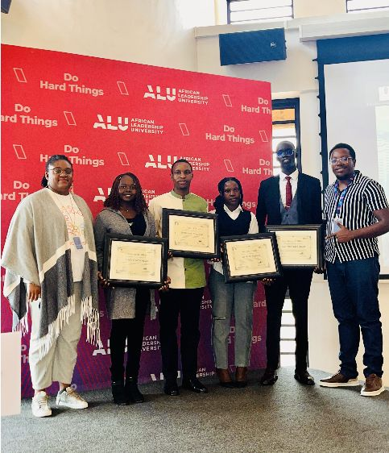
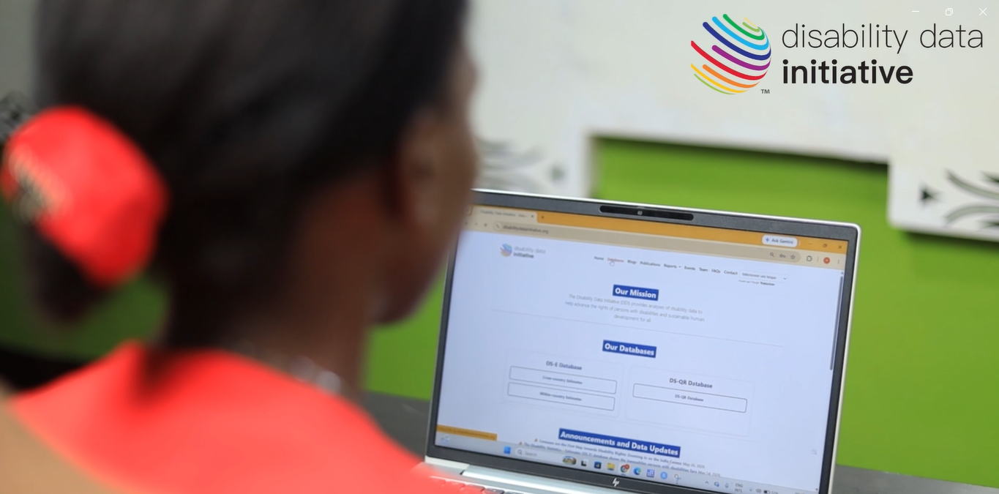
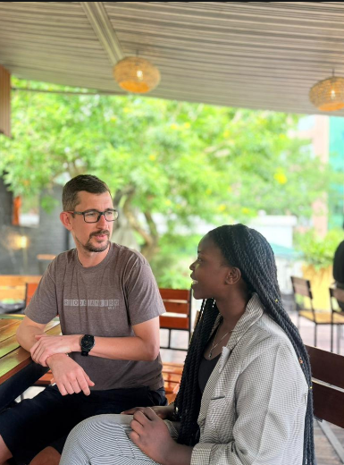
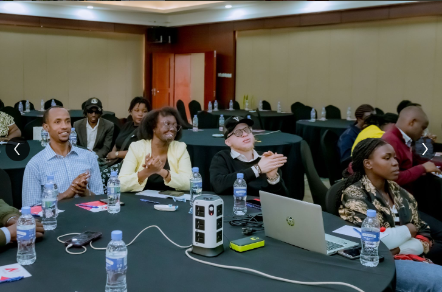
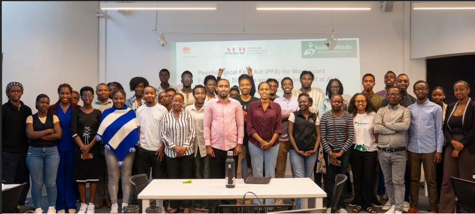
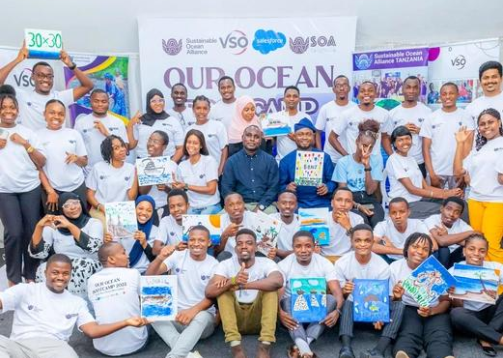

PROJECT 01 · 2025

Rural Women's Digital Skills Research
Research exploring digital skills and their relationship with education among rural women in Mayange, Bugesera.
Learn MoreWelcome to My Portfolio
I enjoy turning information into useful insights, solving problems, and using technology to create opportunities for people and communities.
My Focus
Learning, building, and creating meaningful solutions for the future.
Get to Know Me

I am an Entrepreneurial Leadership graduate from the African Leadership University in Rwanda. I am interested in data analytics, business development, technology, and projects that improve people's lives.
Through research, project coordination, and data-related work, I have developed an interest in understanding challenges, organizing information, and making evidence-based decisions.
I am continuously improving my technical skills and building practical projects to grow professionally and create meaningful impact.
I am continuously strengthening my skills through hands-on practice, research, and real-world projects.
My Work & Experience
Explore my research, projects, and professional experiences in data analytics, technology, entrepreneurship, and community development.
PROJECT 01 · 2025

Research exploring digital skills and their relationship with education among rural women in Mayange, Bugesera.
Learn MorePROJECT 02 · 2026

Participated in a disability data research workshop in Nairobi, Kenya, focused on database navigation, data accessibility, and improving the usability of disability data to promote inclusion and evidence-based decision-making.
Learn MorePROJECT 03 · CURRENT

An entrepreneurship concept designed to help women and girls strengthen their digital skills and explore opportunities for income generation.
Learn MorePROJECT 04

Participated in career development activities focused on professional growth, employability, and preparing for workplace opportunities.
Learn MorePROJECT 05

Developed my understanding of training facilitation, knowledge sharing, and capacity building to support effective learning and inclusion.
Learn MorePROJECT 06

Participated in fellowship learning activities exploring climate resilience, mental wellness, sustainable leadership, and community-based climate action.
Learn MoreLet's Connect
I would be happy to connect about data, business, technology, research, and meaningful projects.